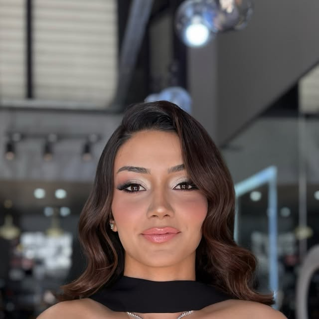
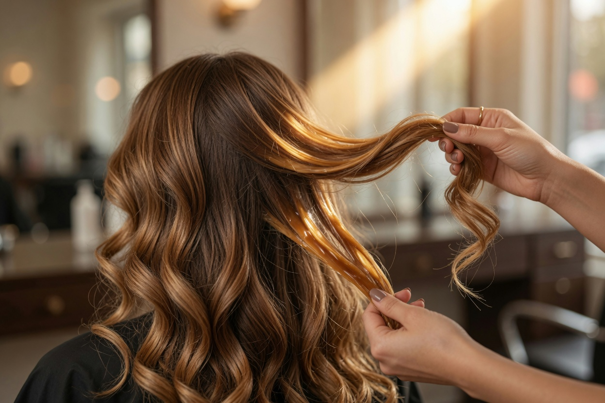
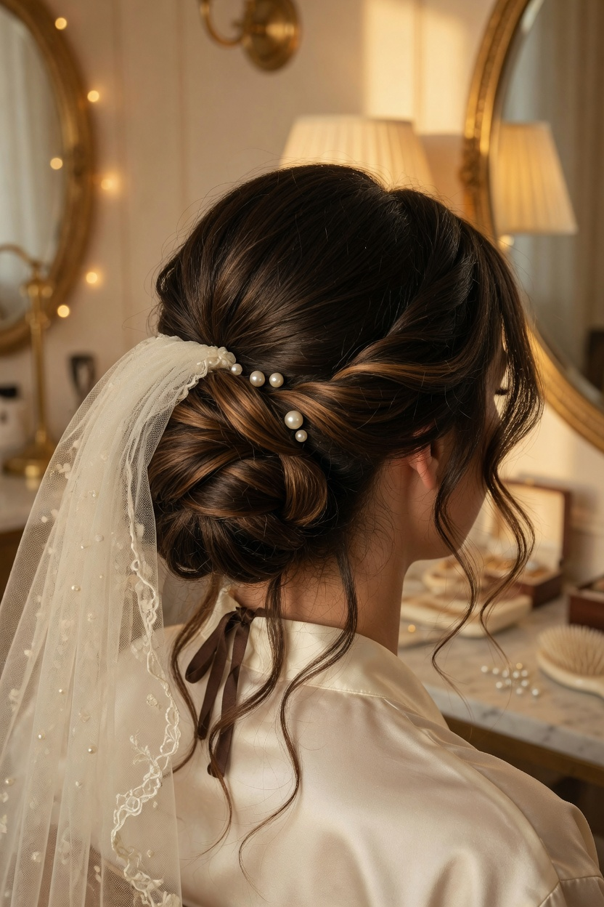
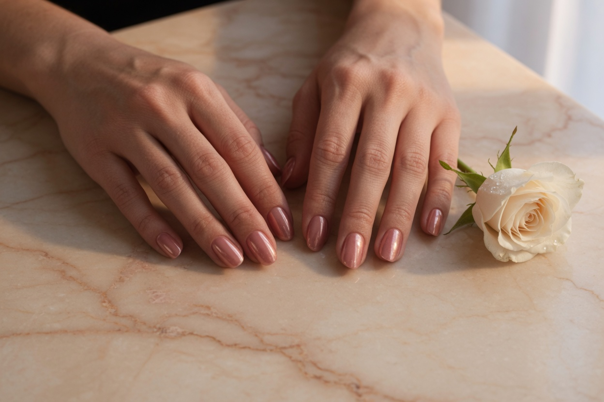
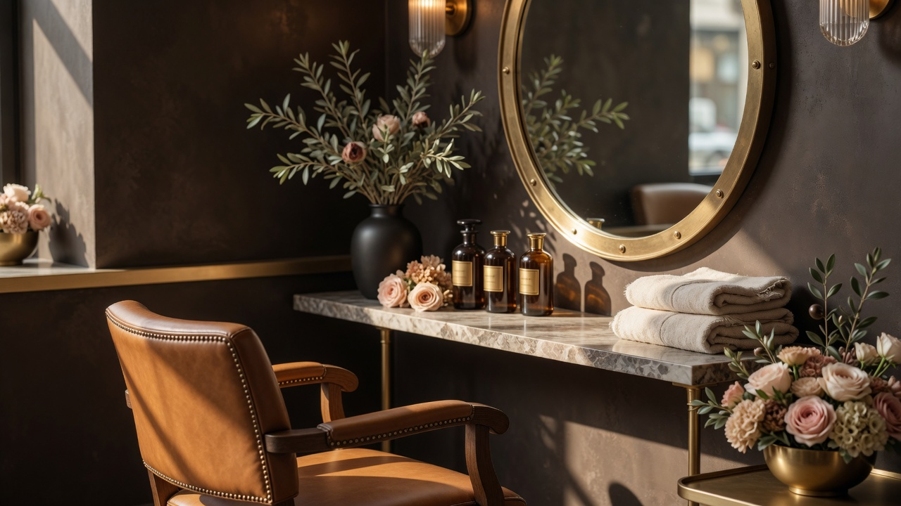

Önce dinleriz
Ten renginiz, yüz hatlarınız ve günlük rutininize göre size uygun rengi ve kesimi birlikte seçeriz.
MALATYA · YEŞİLYURT · GELİN & RENK STÜDYOSU
Gelin saçı ve makyajından balyaja, kesimden tırnağa. Önce sizi dinliyoruz, sonra yüzünüze ve tarzınıza en çok yakışanı birlikte seçiyoruz.




NEDEN ŞEYDA FIRAT
Randevudan önce ne istediğinizi konuşuruz. Böylece koltuğa oturduğunuzda sürpriz değil, hayal ettiğiniz sonuç sizi bekler.
Ten renginiz, yüz hatlarınız ve günlük rutininize göre size uygun rengi ve kesimi birlikte seçeriz.
Gelin saçı ve makyajı için önceden görüşür, düğün gününüzün akışını sakin ve planlı hale getiririz.
Yeşilyurt’taki salona WhatsApp’tan yazın; uygun gün ve işlem detayını salonla netleştirin.
01 / HİZMETLER
Günlük stilinizden en özel gününüze.
İşlem detayları ve fiyat için birlikte konuşalım.
Özel gününüz için gelin saçı ve makyajı üzerine bir ön görüşme.
Özel gününü konuşalım ↗Hizmet kapsamı müşteri beyanına dayalıdır; ana yayın öncesi salon tarafından teyit edilecektir. Fiyat ve işlem süresi bu demoda belirtilmez. “Gelin & makyaj” kartındaki fotoğraf salonun Instagram hesabından; diğerleri konsept görseldir.
SALONDAN BİR KARE
Hollywood dalgası, ışıltılı göz makyajı ve doğal ten. Nişan, kına ya da düğün; o gün fotoğraflarda kendinizi görmekten keyif alacağınız bir görünüm için önce birlikte konuşalım.
Fotoğraf salonun herkese açık Instagram hesabından alınmıştır; yayın öncesi kullanım izni salonla teyit edilecektir.
02 / ÇALIŞMALAR & İLHAM
Kaydırın, kartlar üç boyutlu döner.
Salon kareleri işaretlidir; diğerleri konsepttir.
@MALATYAKUAFORSEYDAFIRAT
KONSEPT GÖRSEL · MÜŞTERİ ÇALIŞMASI DEĞİLDİR
KONSEPT GÖRSEL · MÜŞTERİ ÇALIŞMASI DEĞİLDİR
KONSEPT GÖRSEL · MÜŞTERİ ÇALIŞMASI DEĞİLDİR
KONSEPT GÖRSEL · MÜŞTERİ ÇALIŞMASI DEĞİLDİR

KONSEPT GÖRSEL · SALON FOTOĞRAFI DEĞİLDİR
DÜĞÜN, NİŞAN, KINA YA DA SADECE KENDİNİZ İÇİN
03 / TANIŞALIM
İstediğiniz işlemi paylaşın; uygun gün, işlem süresi ve fiyat salon görüşmesinde netleşsin.
01 İşlemi ve gün tercihini belirleyin.
02 Salonla detayları konuşun.
03 Salon onayıyla randevunuzu kesinleştirin.
Yalnızca örnek seçimler kullanılır. Ad, telefon veya başka kişisel veri istenmez; seçimler kaydedilmez ve gönderilmez.
04 / MALATYA'DA BULUŞALIM
Bostanbaşı · Çiftlik Caddesi
Ayışığı Evleri No:25
Yeşilyurt / Malatya
Adres, telefon ve Instagram bilgileri müşteri beyanıdır; henüz doğrulanmamıştır.
WhatsApp bağlantısı bir mesaj taslağı açar. Mesaj ancak siz gönderirseniz iletilir.